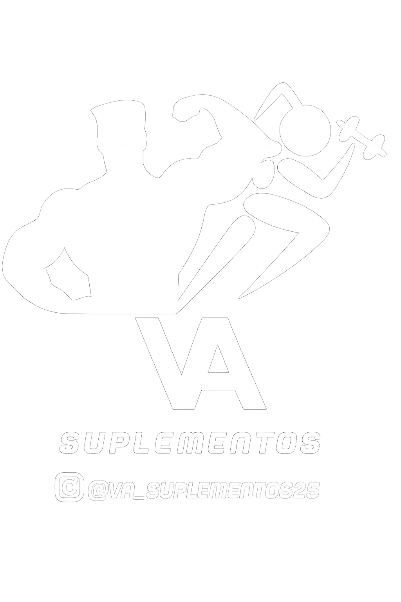

Meu Portfólio
Projeto desenvolvido para apresentar meu trabalho, projetos e posicionamento profissional como desenvolvedor backend/full-stack.
Projeto desenvolvido para apresentar meu trabalho, projetos e posicionamento profissional como desenvolvedor backend/full-stack.

Plataforma web desenvolvida em Django para gestão de agendamentos, autenticação de usuários e organização de horários e espaços.

Sistema desenvolvido para controlar de forma simples, rápida e visual o tempo de uso de carrinhos elétricos e a operação do atendimento.

Aplicativo desenvolvido para transcrever entrevistas de forma automática, facilitando a análise e organização dos dados coletados.

Site de divulgação de projeto de extensão voltado aos saberes interculturais, práticas corporais e valorização cultural dos povos indígenas de Itaparica.

Sistema administrativo desenvolvido para apoiar a gestão de demandas escolares e processos internos da GRE Floresta.
Plataforma institucional desenvolvida para apresentar serviços, fortalecer a presença digital da empresa e centralizar canais de contato.
Plataforma web para gestão de eventos de pitch, com cadastro de participantes, apresentações e votação online.

Sistema web para operação comercial com módulos de produtos, vendas, estoque e resumo operacional.

Solução mobile voltada à análise de risco e apoio a fluxos de cibersegurança. Projeto profissional com detalhes técnicos limitados por confidencialidade.